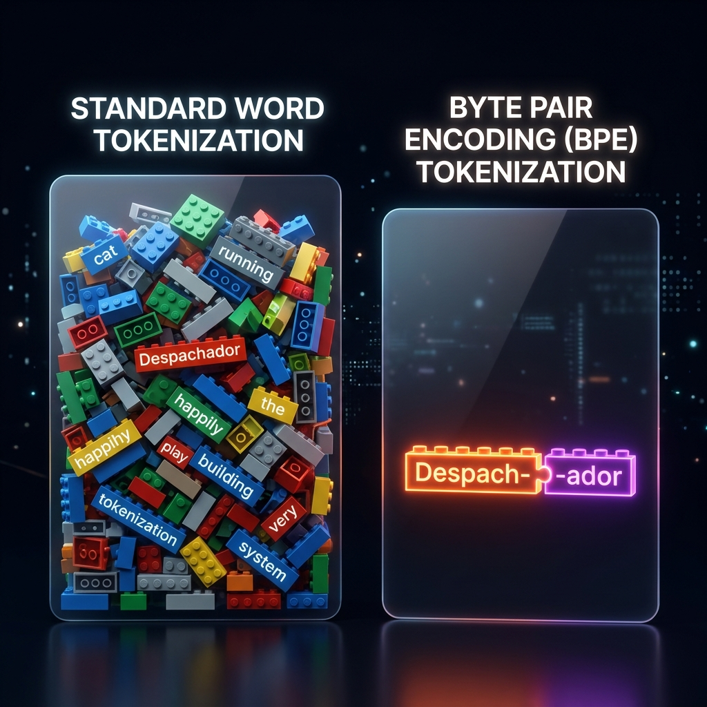
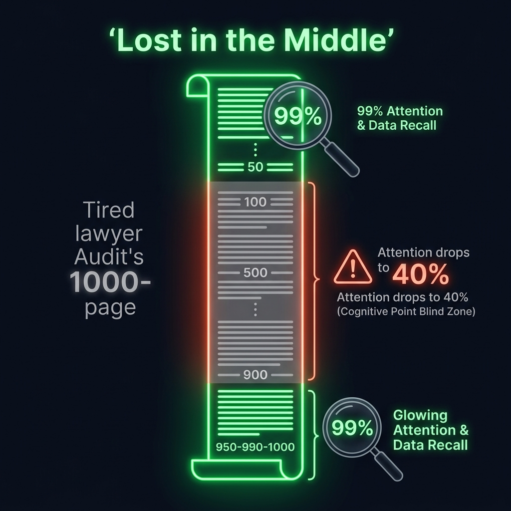
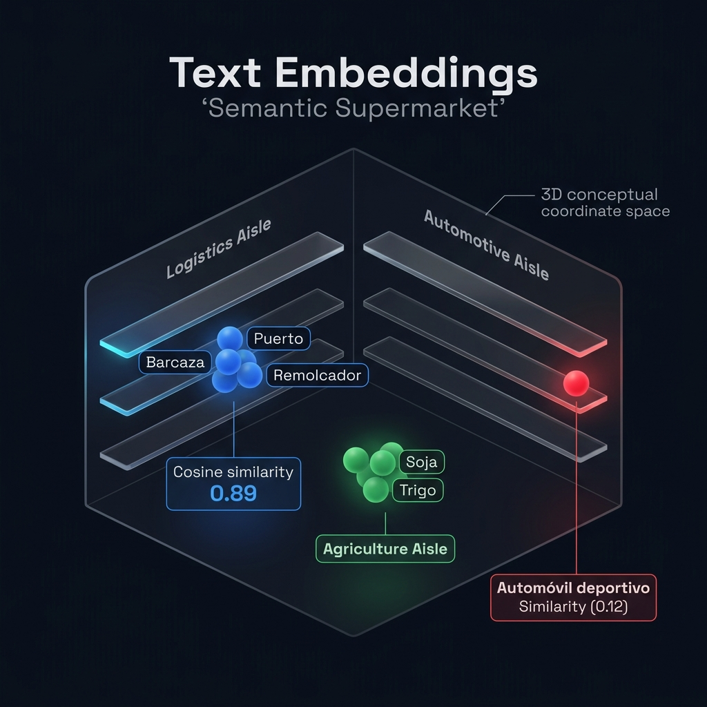

Ilustración Técnica
×
Sesión 2: Cómo estructurar propuestas estratégicas de Inteligencia Artificial Generativa y entender la arquitectura RAG basada en datos privados.
Desmitificamos el 'hype' y analizamos el costo de APIs, caching y Lost in the Middle.
El GPS de las ideas, cosine similarity, filtrado de metadatos y fragmentación con overlap.
Especificamos en un documento formal los requisitos, datos e indicadores de aceptación de la IA.
Evitamos alucinaciones con umbrales, Golden Datasets y roleplay para entrevistas IT.
Del paper fundacional "Attention Is All You Need" (2017) a la realidad probabilística de las APIs modernas.
Publicado por investigadores de Google en 2017 para resolver la Traducción Automática. Creó la arquitectura Transformer (la "T" de GPT) y el mecanismo de Self-Attention: en lugar de leer palabra por palabra olvidando el inicio, el modelo procesa toda la oración en paralelo y pondera cómo cada palabra modifica el significado de las demás según el contexto.
El Fine-Tuning re-entrena un modelo para enseñarle un tono, estilo o formato (ej. responder en JSON). Regla de Oro: No sirve para cargar datos que cambian todos los días. Para conectar el modelo con tus manuales y glosarios privados sin alucinar, usamos RAG (Retrieval-Augmented Generation).
Los modelos de lenguaje no procesan palabras completas. Conocé cómo impacta la segmentación semántica en tus costos.
Aproximadamente 1000 tokens equivalen a 750 palabras. Las APIs cobran tarifas asimétricas: los tokens de entrada (Input Context) son mucho más baratos que los tokens generados por el modelo (Output Generation).

Una optimización a nivel de arquitectura backend. Almacena en caché los prompts extensos del sistema que no cambian (ej. las directrices y manuales base), reduciendo costos de facturación de entrada hasta un 50% y acelerando las respuestas.
Las limitaciones de memoria en prompts masivos y cómo los LLMs pierden la atención en el centro geométrico del contexto.
Define la memoria a corto plazo del modelo. Aunque las ventanas modernas son masivas, el rendimiento de la IA se degrada drásticamente cuanto más grande es el contexto inyectado en una sola llamada de API.

Los LLMs recuerdan de forma sobresaliente (99% de precisión) la información ubicada al inicio y al final de la ventana de contexto, pero sufren una pérdida de retención del 40% en los datos del medio.
La clave geométrica para que las computadoras entiendan el significado conceptual y las asociaciones del lenguaje natural.
Se ingresa una frase o párrafo: "Validar glosario técnico para lanzamiento global".
El modelo traduce el texto en una lista de coordenadas matemáticas (1536 números).
Las ideas similares se ubican geométricamente cerca en el espacio de alta dimensión.

Cercanía por Coseno: El modelo mapea conceptos en 1536 dimensiones. Términos afines de tecnología y lenguaje ("Localización", "Memoria de Traducción") quedan con un score de similitud de 0.89, mientras "Automóvil" queda aislado en 0.12.
La memoria a largo plazo persistente de la IA y cómo acelerar búsquedas reduciendo ruido mediante filtros semánticos.
Las bases de datos vectoriales (Pinecone, PGVector) guardan millones de embeddings y permiten realizar búsquedas semánticas (similitud de coseno) en milisegundos.
Pre-filtrar los datos vectoriales por metadatos estructurados (idioma, cliente, módulo) para limitar la búsqueda semántica y optimizar la precisión de recuperación.
Ejecutando búsqueda semántica optimizada filtrando en: [Idioma: ES-LATAM]
Cómo cortar documentos extensos sin quebrar el sentido gramatical y la importancia del solapamiento.
Dividir PDFs complejos (como un manual de producto o guía de estilo global) en trozos discretos de 1000 caracteres. Si el corte ocurre en la mitad de una regla de tarifas, la información se vuelve inútil.
Duplicar el 10% del texto del final de un fragmento A al inicio del fragmento B para actuar como un "puente" semántico.
La etapa Batch de procesamiento y almacenamiento offline del conocimiento privado del negocio.
Se recopilan los documentos oficiales y privados que regulan el negocio (ej. manuales de producto, guías de estilo, glosarios técnicos y wikis internas). Estos archivos actúan como la fuente única de verdad (Ground Truth).
Cómo el sistema RAG orquesta en tiempo real la búsqueda semántica para alimentar al LLM con evidencia física.
El usuario realiza una pregunta sobre el negocio, por ejemplo: "¿Qué criterios de estilo y terminología se aplican al módulo de pagos para usuarios de Latinoamérica?".
Construcción práctica de las especificaciones y del backlog del "Enterprise Knowledge Bot".
Asistente RAG que ayuda a equipos de Producto, Ingeniería y Localización a consultar documentación técnica, glosarios y reglas de negocio en segundos.
Reglas e indicadores de aceptación técnica del bot.
Cómo asegurar que la información corporativa sensible no sea filtrada y se procese bajo estándares estrictos.
Las políticas de seguridad exigen consumir modelos bajo contratos corporativos especiales (ej. Azure OpenAI o APIs Enterprise con retención de datos en cero). Esto garantiza que el prompt introducido no sea retenido, analizado, ni utilizado para re-entrenar modelos públicos comerciales.
El control lógico de confianza semántica para obligar al bot a abstenerse si no dispone de registros.
Cada búsqueda semántica en la base de datos vectorial devuelve una puntuación de similitud semántica. Como PMs, calibraremos un umbral estricto (ej. 0.75).
Así es la compuerta de seguridad lógica que protege el sistema:
Cómo estructurar auditorías cuantitativas sistemáticas sobre software probabilístico de IA.
Un conjunto curado de 50 a 100 preguntas típicas asociadas a respuestas perfectas certificadas por expertos del dominio, utilizado como benchmark del producto.
Ante cada cambio de prompt o base de datos, corremos el Golden Dataset en el pipeline de CI/CD para medir estadísticas de fidelidad al contexto (Context Adherence) de forma objetiva.
Monitoreo continuo de latencia, costo en dólares de tokens y desvíos semánticos en producción mediante herramientas especializadas como Langfuse o Arize.
Entrena tu discurso estratégico para entrevistas técnicas con reclutadores de IT y líderes de ingeniería.
Respuesta Estrella: "El Fine-Tuning no es adecuado para inyectar conocimientos fácticos cambiantes, ya que el modelo sigue alucinando de memoria estática. El Fine-Tuning se utiliza para ajustar estilo, tono o formatos de salida estructurados. Para garantizar precisión absoluta y actualización en tiempo real, la propuesta correcta consiste en implementar una arquitectura RAG combinada con una base de datos vectorial."
Respuesta Estrella: "Implementamos tres estrategias de optimización: 1) Prompt Caching para reducir la facturación de entrada de reglas fijas; 2) Caché Semántica a nivel de backend para responder consultas repetidas frecuentes sin llamar al LLM; y 3) Políticas estrictas de Rate Limits por perfil de usuario corporativo."
Consolida tu perfil técnico diferenciando tu alcance de RAG actual y el roadmap de automatización que vendrá.
Comprender RAG y tokens no es para programar; es para liderar proyectos con viabilidad real y tomar decisiones estratégicas:
Diferencia claramente el alcance de cada fase del programa para tus entrevistas estratégicas:
Completa la plantilla del Mock PRD del "Enterprise Knowledge Bot" especificando los parámetros de chunking, overlap, umbral de confianza y Enterprise SLA. Este documento será tu actividad semanal.